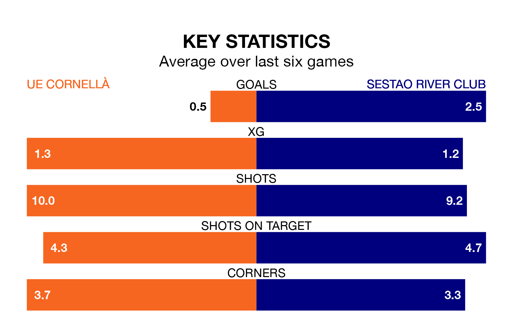

UE Cornellà welcome Sestao River Club to Campo Nuevo Municipal de Cornella on late Saturday looking to pick up points to end their four-game losing streak.
UE Cornellà's struggles have left them with just four points from their last six Primera Division RFEF Group 1 matches, while their opponents have earned 12 from a possible 18.
Sestao River Club are 16th in the table after 31 games, of which they have won eight and drawn 10, earning 34 points.
UE Cornellà are one place ahead of the visitors in 15th, with eight wins and 10 draws putting them on the same number of points.
With 26 goals in 32 games so far this season, the home team are scoring at below the league average rate with 0.8 goals per game. But they are conceding fewer than average too, letting in 33 goals at a rate of 1.0 per game.
Sestao River Club are also below average scorers, with 1.0 goal per game, compared to a league average of 1.1. They have conceded 1.4 goals per game.
Sestao River Club's Jon Guruzeta is among the league's most creative players, racking up six assists in 22 appearances so far this season, and holding second spot in Primera Division RFEF Group 1's assist charts.
For UE Cornellà, Antonio Jesús Caballero Ramírez has set up the most goals, having laid on three assists in 24 games.
UE Cornellà's last match was on April 13, a 2-1 loss against Arenteiro, with Edward Campbell Sutherland getting the goal for UE Cornellà.
Sestao River Club beat Real Unión 3-1 last time out, also on April 13, with Leandro Martínez Ortiz (two) and Ibai Sanz Bancalero on the scoresheet.
Updated: 11:31 (UTC), 15/04/24